7115064191_hw2.py ｜ GitHub：A0966411725-png/HW2-Multiple-Linear-regressionprice。（因為沒有 Kaggle API 金鑰，檔案改從 GitHub 鏡像 Shreyas3108/house-price-prediction 下載，筆數與欄位都和 Kaggle 原檔相同。）| 模型 | 特徵數 | Test R²(log) | 5-fold CV R² | RMSE (USD) | MAPE | 95% PI 覆蓋率 |
|---|---|---|---|---|---|---|
| M1 單純線性回歸 | 1 | 0.453 | 0.455 | 296,181 | 33.1% | – |
| M2 多元線性回歸（全部） | 17 | 0.775 | 0.772 | 187,262 | 19.8% | – |
| M3 多元線性回歸（特徵選擇後） | 12 | 0.761 | 0.761 | 195,199 | 20.3% | 94.4% |
| M4 = M3 + zipcode one-hot | 12+69 | 0.878 | 0.879 | 142,491 | 13.7% | 94.0% |
| HistGradientBoosting（主流解法對照） | 18 | 0.905 | 0.903 | 137,215 | 11.6% | – |
問題：買方、賣方與仲介都需要一個「合理成交價」的參考。單一的點估計不夠，決策者還需要知道價格可能落在哪個範圍，才能判斷開價是否偏高、議價空間多大。
| 利害關係人 | 需求 | 模型提供的資訊 |
|---|---|---|
| 買方 | 判斷開價是否合理 | 預測價與 95% 預測區間；高於區間上限代表可能買貴 |
| 賣方 / 仲介 | 訂定開價、說明房屋價值來源 | 各因素的百分比影響（係數解讀），例如等級 +1 級約 +21% |
| 估價 / 貸款機構 | 估價要可解釋、可稽核 | 線性模型的係數、p 值、信賴區間都可以逐項檢查 |
目標：以線性回歸建立可解釋的房價模型，回答：(1) 哪些因素最影響房價、影響多大？(2) 給定一間房子的條件，預測價格與 95% 預測區間。
成功標準（在第 5.4 節逐項檢核）：測試集 R² ≥ 0.75、MAPE ≤ 20%；95% 預測區間的實際覆蓋率在 93–97% 之間；5-fold CV 與測試集結果一致（不過擬合）；係數方向符合常識。
| 欄位 | 意義 | 型態 / 範圍 |
|---|---|---|
| price（目標） | 成交價（美元） | 連續，$75K – $7.7M，中位數 $450K |
| bedrooms / bathrooms | 臥室數 / 衛浴數（0.5 = 只有馬桶洗手台） | 離散，0–33 / 0–8 |
| sqft_living / sqft_lot | 室內面積 / 土地面積（平方英尺） | 連續，290–13,540 / 520–1.65M |
| sqft_above / sqft_basement | 地上面積 / 地下室面積（兩者相加 = sqft_living） | 連續 |
| sqft_living15 / sqft_lot15 | 最近 15 戶鄰居的平均室內 / 土地面積 | 連續 |
| floors | 樓層數 | 1–3.5 |
| waterfront | 是否臨水 | 0/1（0.75% 為 1） |
| view | 景觀評分 | 序數 0–4 |
| condition | 屋況 | 序數 1–5 |
| grade | King County 建築品質等級 | 序數 1–13 |
| yr_built / yr_renovated | 建造年 / 翻修年（0 = 未翻修） | 1900–2015 |
| zipcode / lat / long | 郵遞區號 / 緯度 / 經度 | 70 個 zipcode；名目 / 連續 |
log(price) 為建模目標。sqft_living(0.70)、grade(0.67)、sqft_above(0.61)、sqft_living15(0.59)、bathrooms(0.53)。sqft_basement = sqft_living − sqft_above 為完全共線，需處理多重共線性。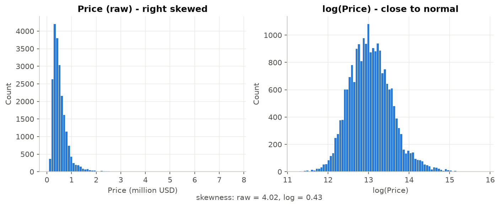
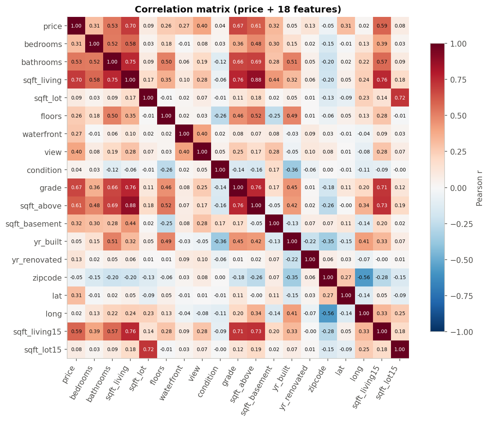
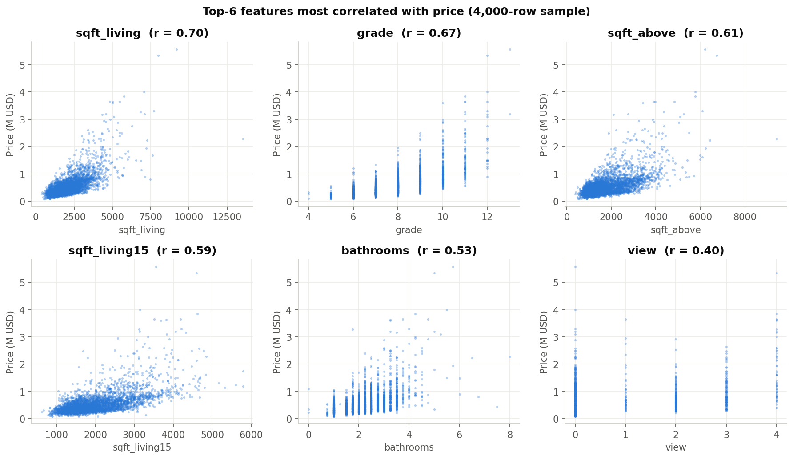
log_price = log(price)，讓殘差較接近常態、變異數較穩定，係數可解讀為「百分比變化」。house_age = 成交年 − yr_built；is_renovated = yr_renovated > 0；has_basement = sqft_basement > 0；面積欄位全部取 log。處理後共有 17 個數值候選特徵：bedrooms, bathrooms, log_sqft_living, log_sqft_lot, floors, waterfront, view, condition, grade, log_sqft_above, has_basement, house_age, is_renovated, lat, long, log_sqft_living15, log_sqft_lot15。
對 17 個候選特徵使用五種方法交叉驗證：
| 方法 | 做法 | 結果 |
|---|---|---|
| 相關分析 | |r| 與 log_price | grade、log_sqft_living、log_sqft_living15 最強 |
| VIF | 變異數膨脹因子 > 5 代表共線 | log_sqft_living / log_sqft_above (≈19.6)、log_sqft_lot / lot15 (≈6.9) |
| Backward Elimination | OLS 逐步移除 p > 0.05 | 移除 long（p = 0.81） |
| RFECV | 遞迴特徵消除 + 5-fold CV | 最佳 16 個；12 個以後 CV R² 幾乎不再增加 |
| LassoCV | L1 正則化（α = 0.00037） | long 係數被壓到 0 |
| Forward Stepwise（佐證） | 每步加入讓 AIC 最低的特徵 | 前 4 名 grade → lat → log_sqft_living → house_age；第 12 個之後 Adj R² 只再增加 0.002 |
決策規則：三種方法（Backward、RFECV、Lasso）中至少 2 票保留 → 再以 VIF ≤ 5 迭代修剪：每次取 VIF 最高的特徵與其最相關的夥伴，刪掉與目標相關較弱者。Forward Stepwise 不參與投票，只用來檢查「留多少個特徵才划算」。
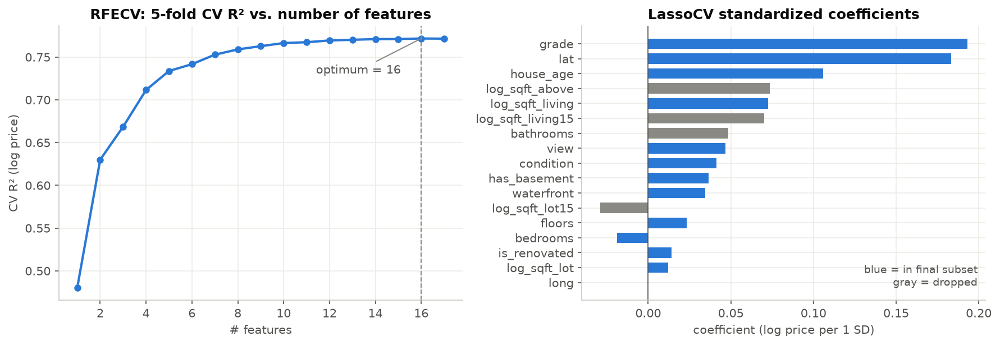
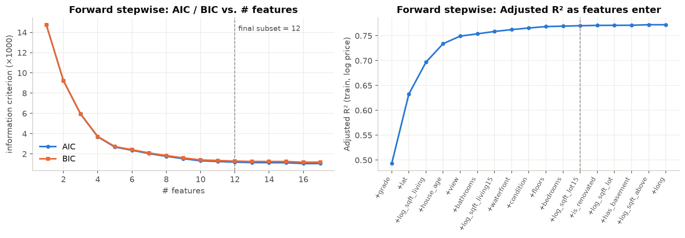
和 Forward Stepwise 的比較：Forward Stepwise 挑出的前 12 個特徵裡有 9 個和我們的子集相同；差別在它選了 bathrooms、log_sqft_living15、log_sqft_lot15，這三個都和已選的面積欄位高度相關。它的 12 特徵模型訓練集 Adj R² 是 0.770，我們的 M3 是 0.761，只差 0.009，但 M3 的最大 VIF 只有 4.4，係數比較穩定、也比較好解讀。我們選擇犧牲一點點擬合度，換取可解釋性。
| 特徵 | 係數 | 解讀 |
|---|---|---|
| log_sqft_living | 0.460 | 室內面積 +10% → 房價約 +4.5%（彈性） |
| grade | 0.191 | 建築等級每 +1 級 → 房價約 +21% |
| waterfront | 0.397 | 臨水 → 房價約 +49% |
| lat | 1.337 | 緯度 +0.1°（往北、接近西雅圖市區）→ 約 +14% |
| view | 0.071 | 景觀評分每 +1 → 約 +7% |
| floors | 0.069 | 每多一層樓 → 約 +7% |
| condition | 0.060 | 屋況每 +1 → 約 +6% |
| is_renovated | 0.074 | 曾翻修 → 約 +8% |
| house_age | 0.0032 | 控制品質後，老屋略貴（多位於成熟市區） |
| bedrooms | −0.018 | 面積固定下房間越多 → 每間越小，價格略降 |
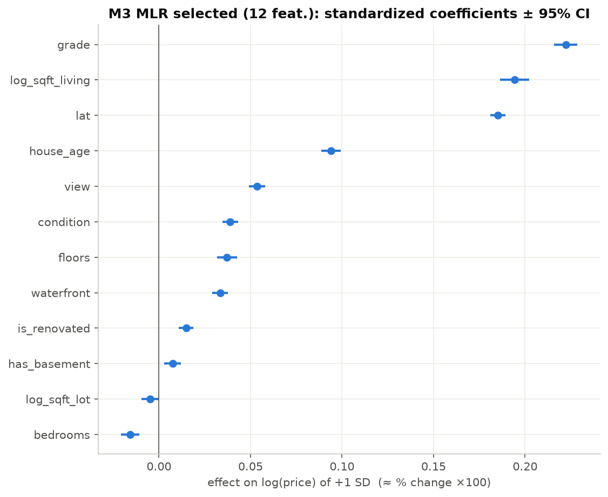
作業允許嘗試 Auto Regression，所以我們也做了測試。不過 AR 是時間序列模型，用變數自己過去的值預測未來；本資料是「每間房子一筆」的橫斷面資料，AR 沒辦法預測個別房屋，只能預測整體市場的價格走勢。做法：把成交價彙總成每週中位數（55 週），用前 47 週訓練、AIC 選出落後階數 p = 3，預測最後 8 週。
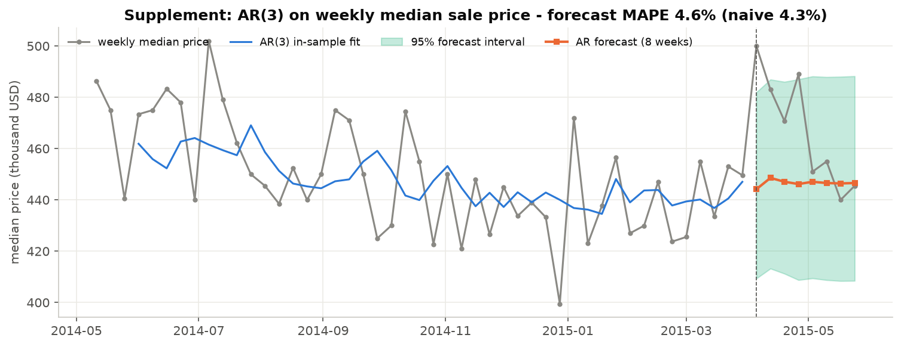
結論：每週中位數的波動主要是雜訊，加上 2015 年 4 月的春季旺季跳升，這種季節性只有 55 週的資料學不出來，所以 AR 贏不了 naive 預測。房價主要由房屋本身的條件決定，因此主模型採用多元線性回歸，AR 只作為補充。
測試集 R²（log 與還原為美元兩種尺度）、Adjusted R²、5-fold CV R²、RMSE、MAE、MAPE，以及 95% 預測區間覆蓋率。
| 模型 | R²(log) | Adj R² | CV R² (mean±sd) | R²(USD) | RMSE | MAE | MAPE |
|---|---|---|---|---|---|---|---|
| M1 Simple LR | 0.453 | 0.453 | 0.455±0.008 | 0.420 | 296,181 | 173,926 | 33.1% |
| M2 MLR all (17) | 0.775 | 0.774 | 0.772±0.006 | 0.768 | 187,262 | 110,553 | 19.8% |
| M3 MLR selected (12) | 0.761 | 0.760 | 0.761±0.006 | 0.748 | 195,199 | 113,288 | 20.3% |
| M4 MLR + zipcode | 0.878 | 0.876 | 0.879±0.003 | 0.866 | 142,491 | 76,678 | 13.7% |
| Ridge (M4 design) | 0.878 | – | 0.879±0.003 | 0.866 | 142,496 | 76,681 | 13.7% |
| Random Forest | 0.892 | – | 0.889±0.004 | 0.861 | 144,842 | 70,493 | 12.3% |
| HistGradientBoosting | 0.905 | – | 0.903±0.002 | 0.876 | 137,215 | 64,868 | 11.6% |
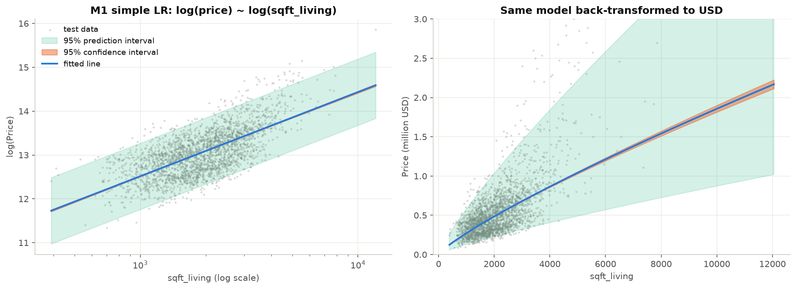
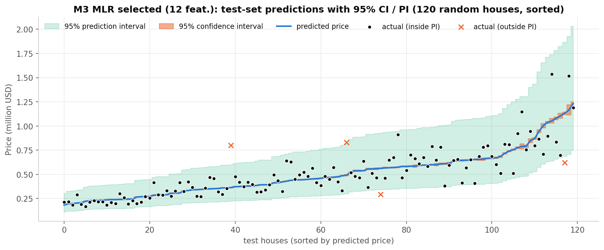
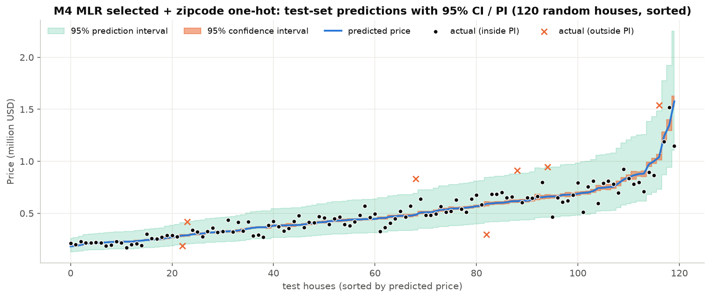
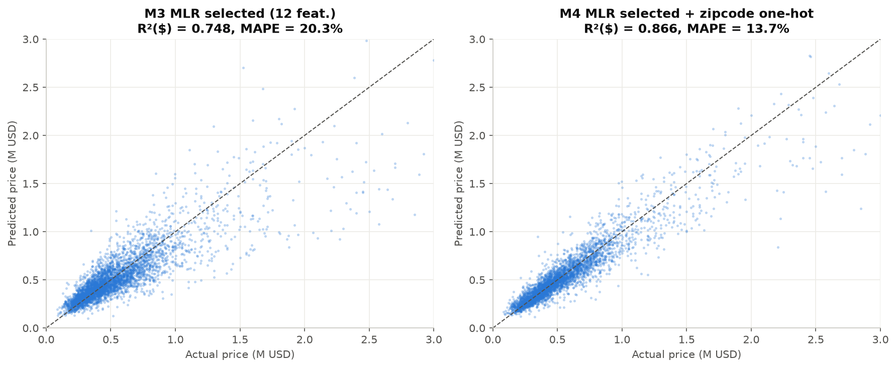
| 檢查項目 | 方法 | 結果 | 判讀 |
|---|---|---|---|
| 多重共線性 | VIF / 標準化條件數 | 最大 VIF 4.44；條件數 4.4 | 通過（VIF < 5、條件數 < 30） |
| 殘差自相關 | Durbin-Watson | 1.99 | 通過（接近 2 = 無自相關） |
| 殘差常態性 | Jarque-Bera | JB = 796，p < 0.001；偏態 0.15、峰度 4.0 | 尾部略厚；樣本 17,135 筆，依中央極限定理係數推論仍可靠 |
| 變異數同質性 | Breusch-Pagan | LM = 605，p < 0.001 | 有異質變異 → 改用 HC3 穩健標準誤重新檢定 |
| 穩健性檢查 | HC3 robust SE | 12 個係數中 11 個仍 p < 0.05 | 只有 log_sqft_lot 變成 p = 0.078；結論不受影響 |
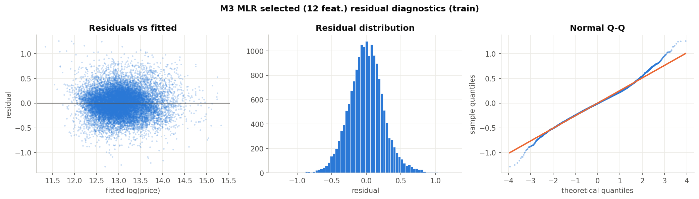
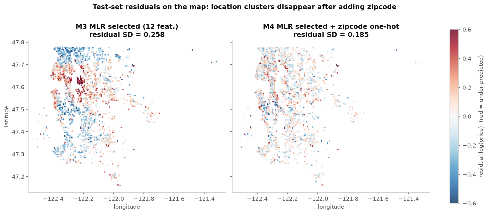
只看 95% 一個點不夠，所以再檢查 50%、68%、80%、90%、95%、99% 六種信賴水準下，測試集實際落在預測區間內的比例：
| 名目水準 | 50% | 68% | 80% | 90% | 95% | 99% |
|---|---|---|---|---|---|---|
| M3 實際覆蓋率 | 52.6% | 71.1% | 81.7% | 90.2% | 94.4% | 98.1% |
| M4 實際覆蓋率 | 57.4% | 73.5% | 83.4% | 90.5% | 94.0% | 97.6% |
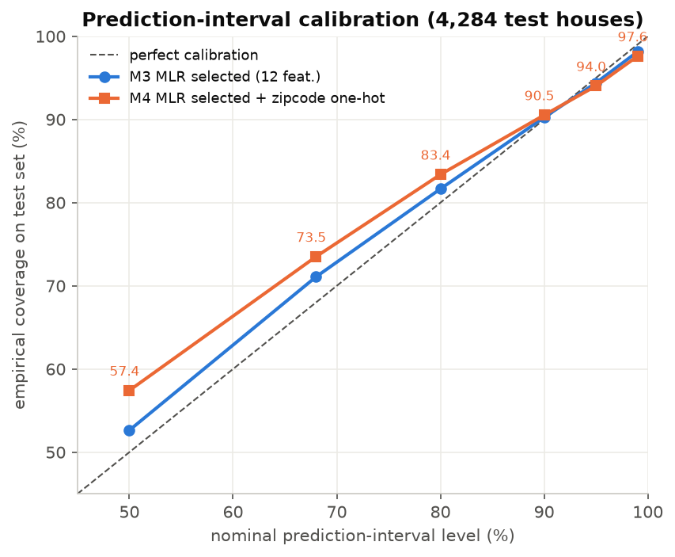
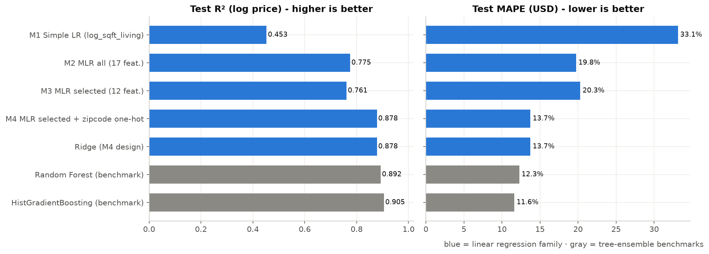
| 成功標準 | M3（12 特徵） | M4（+ zipcode） |
|---|---|---|
| 測試集 R² ≥ 0.75 | ✔ 0.761 | ✔ 0.878 |
| MAPE ≤ 20% | ✘ 20.3%（差 0.3 個百分點） | ✔ 13.7% |
| 95% PI 覆蓋率在 93–97% | ✔ 94.4% | ✔ 94.0% |
| CV 與測試一致（不過擬合） | ✔ 0.761 vs 0.761 | ✔ 0.879 vs 0.878 |
| 係數方向符合常識 | ✔ 面積、等級、臨水、景觀皆為正 | ✔ |
結論：M4 達成全部成功標準，作為部署模型；M3 用來解釋「哪些因素影響房價」。
model/house_price_mlr.pkl（用 remove_data() 去掉訓練資料，34 MB → 約 60 KB）。predict.py 提供 predict_price() 函式與命令列介面，輸入房屋條件即輸出預測價與 95% CI / PI：
$ python predict.py --sqft_living 2000 --grade 8 --zipcode 98052 --lat 47.68 Predicted price : $553,994 95% CI (mean) : $544,004 - $564,168 95% PI (house) : $388,300 - $790,393
results/run_log.txt。此資料集在 Kaggle 是 Dataset（不是 Competition），沒有排行榜名次，所以改和網路上公開的解法（Kaggle Notebook、GitHub、論文，見第 9 節 NotebookLM 的 7 個來源）回報的 R² 對照：
| 常見做法 | 網路上回報的 R² | 本作業對應結果 |
|---|---|---|
| 單純線性回歸（price ~ sqft_living） | ≈ 0.49 | M1：0.453（log 尺度，已移除錯誤資料） |
| 多元線性回歸（原始 price、未處理共線性） | ≈ 0.65–0.70 | M2：0.775、M3：0.761 |
| 多項式 + Ridge 正則化 | ≈ 0.70–0.75 | Ridge：0.878（與 OLS 幾乎相同，表示共線性已處理） |
| log 轉換 + zipcode 虛擬變數 | — | M4：0.878、MAPE 13.7% |
| 樹模型（Random Forest、XGBoost、LightGBM） | ≈ 0.85–0.87 | RF：0.892、HistGradientBoosting：0.905 |
| 面向 | 多元線性回歸（M4） | 梯度提升樹（HGB） |
|---|---|---|
| 準確度 | R² 0.878、MAPE 13.7% | R² 0.905、MAPE 11.6% |
| 可解釋性 | 每個係數都可以讀成「百分比影響」，有 p 值與信賴區間 | 黑盒，需要 SHAP 等工具輔助 |
| 預測區間 | 理論公式直接給出，實測覆蓋率 94%，校準良好 | 需要額外的 quantile regression 或 conformal prediction |
| 非線性、交互作用 | 需要人工設計（log、zipcode one-hot） | 自動學習 |
比較結論：樹模型準確度最高，但 M4 線性回歸只差約 2–3 個百分點（R² 0.878 vs 0.905），而且已經超過網路上常見的樹模型成績（0.85–0.87）。線性回歸能做到這個程度，關鍵是三件事：log 轉換、系統化的特徵選擇、zipcode 地段固定效果。若目標是解釋與估價範圍，線性回歸更合適；若只求點預測準確度，則選梯度提升樹。
7115064191_ai_conversation.pdf。作業分兩段完成：第一段建立完整分析，第二段依評分標準補強。只收錄和作業內容有關的對話。kc_house_data.csv，寫好並執行主程式 7115064191_hw2.py：
| 模型 | R²(log) | MAPE |
|---|---|---|
| M1 單純線性回歸 | 0.453 | 33.1% |
| M2 MLR 全部 17 個特徵 | 0.775 | 19.8% |
| M3 MLR 選出的 12 個特徵 | 0.761 | 20.3% |
| M4 M3 + zipcode | 0.878 | 13.7% |
| HistGradientBoosting（對照） | 0.905 | 11.6% |
predict.py 部署程式，以及 PDF 報告。另外發現模型檔有 34 MB（statsmodels 會存訓練資料），用 remove_data() 縮到 60 KB。常見資料前處理與特徵工程：主流解法多先處理缺失值（以中位數或平均值補值）、刪除不相關的 ID 欄位，並用 IQR 剔除極端離群值。房價呈右偏分布，會先做對數轉換與標準化；地理位置特徵（zipcode、lat、long）對價格影響很大，需要分組或類別編碼；也必須篩掉高度共線的面積欄位（如 sqft_living 與 sqft_above）。
使用模型與成效 (R²)：單純線性回歸只能解釋約 49% 的變異（R² ≈ 0.49）；多元線性回歸可提升到 R² ≈ 0.65–0.70；加入二次多項式和 Ridge 正則化後約 0.70–0.75；樹狀集成模型（隨機森林、XGBoost/LightGBM）表現最好，R² 可達 0.85–0.87。
線性模型與樹模型比較：線性模型結構簡單、計算快、可解釋性高，也能直接算出統計預測區間，但無法自動捕捉非線性交互作用和地理空間的差異。樹模型能擬合非線性關係與特徵交互作用，對共線性也較不敏感，但屬於黑盒模型（需搭配 SHAP 解釋），也很難直接輸出傳統的參數式預測區間。
對本作業的啟示：多元線性回歸是建構預測區間最直接的工具。要縮小和樹模型的準確度差距，前處理必須對房價做 log 轉換以符合殘差常態假設，用 VIF 或逐步回歸排除共線性變數，並對 zipcode 等區域特徵適當編碼，才能在保有區間估計優勢的同時達到最好的預測成效。